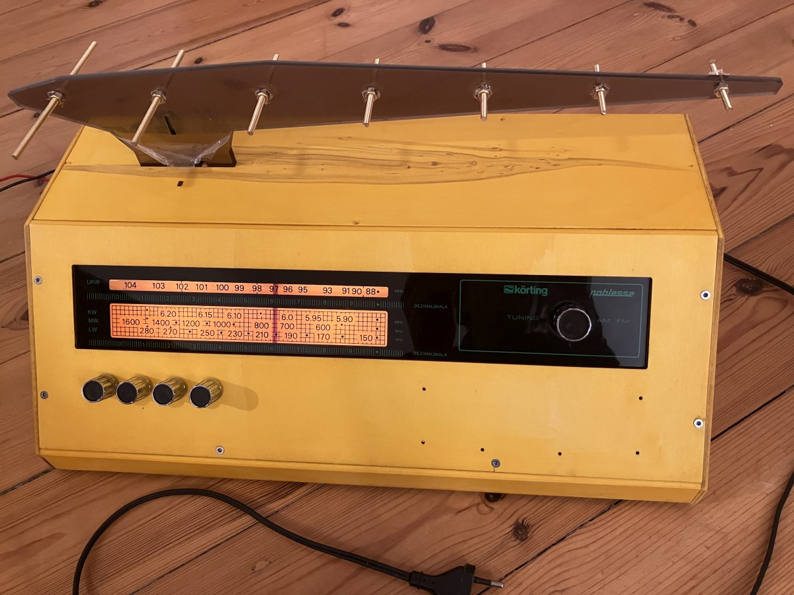
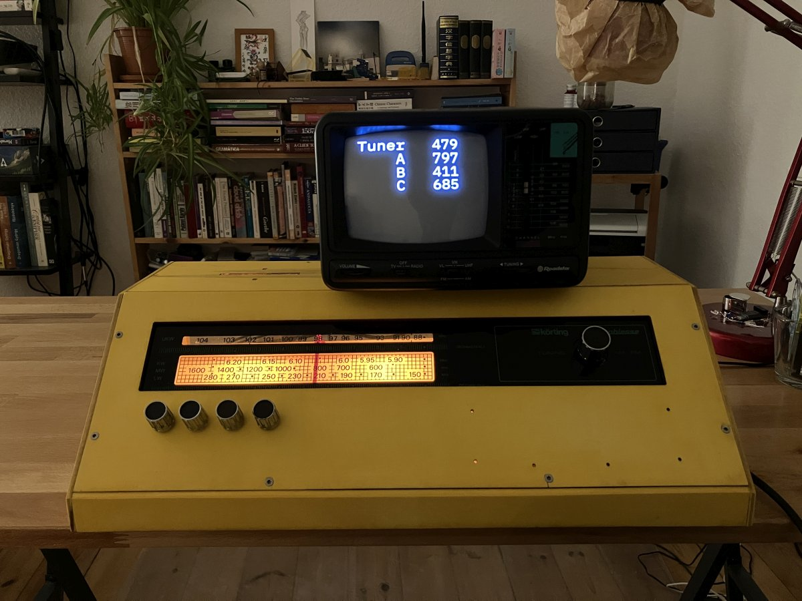
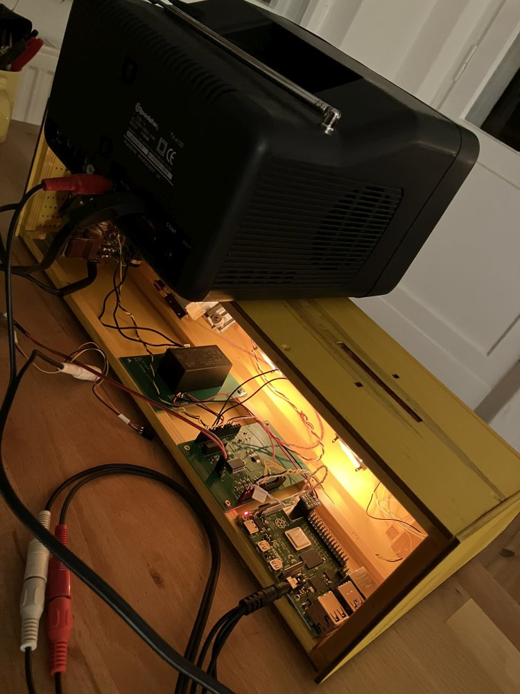

Maybe this is the first device to receive alien transmissions. A curious object that looks like a vintage radio, or a computer from Severance. It has a weird antenna at the top, and it is connected to a flickering, low-resolution CRT television.

Mostly the screen shows static. But as you fiddle with the tuning knob, you soon discover that there are stations at certain frequencies. The transmissions are abstract procedural animations. They look like something created by alien minds: mathematical, geometric, but somehow also warm and compassionate. They are multi-dimensional streams of friendship and curiosity from outer space.

* This image shows the calibration of the Receiver's controls. The finished Receiver will be connected to a full-sized
color TV, which will show either static or animations generated from code in real time.
Or is this art? Maybe the animations were coded up by creative sorcerers who practice the dark art of shader graphics, or Hydra video synthesis. That would make the Intergalactic Receiver a collaborative art project, a platform for the work of several algorithmic artists.

Received by: Transceiver Relay01 at Relay
Language path: Acquileron Triskweline, SjK: Relay units
From: Net Administrator for Transceiver Windsong at Debley Down
Subject: Emerging civilization first contact
Key phrases: first contact, medium zone of thought, visual intelligence
Distribution: Generative Friendship Special Interest Group, Circle of Galactic Compassion
Date: 07:21:21 Docks Time, 36/09 of Org year 52089
Text of message:
Refracted propagation picked up by sublight sensors reveals that a new quantum entanglement device
has been activated in the 3JNE-CCB system. The system's indigenous civilization has not previously been
capable of intergalactic communication. Only a single device is in operation, and it is only capable of
receiving quantum entanglements. At a pre-solarpunk stage of development it is to be expected that the operators
do not yet possess the kind of laminar energy flows needed to spawn outgoing entaglement.
On past occasions the mistake has been made to broadcast a purely rationalistic message devoid of creativity,
playfulness, art or compassion. We are therefore announcing this Open Call for all members of
Generative Friendship and Galactic Compassion.
Please respond with existing or suggested shader art within the receiver's rudimentary computational bounds:
If you are interested in contributing a shader animation for a station, get in touch with Gábor.
Your artwork will spark joy in the people of 3JNE-CCB.